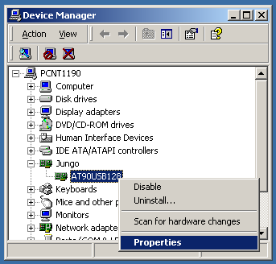
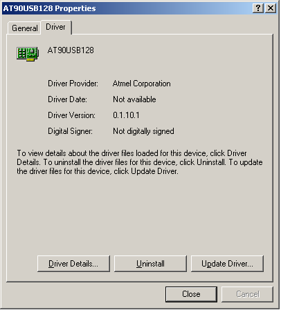
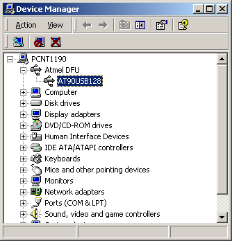

Updating the Flip USB Driver - Windows 2000
Flip uses a new USB driver since the release 3.1.0
These detailed instructions will show you how to update the Flip USB driver from the Jungo driver to the libUsb one.

1 - Open the Device Manager and right-click the Atmel USB device in the Jungo section.
In the pop-up menu, select Properties.
2 - In the Properties dialog Driver tab, click the Update Driver button.

3 - Click Next >

4 - Select the option: Search for a suitable driver for my device. Click Next >

5 - Check the Specify a location operation. Uncheck all others. Click Next >

6 - Use the Browse button to specify the \usb folder path of the Flip package. Click OK.

7 - Check the Install one of the other drivers option. Click Next >

8 - Select the driver located in the Flip package. Click Next >

9 - Click the Close button of the Properties dialog.

10 - The Device Manager updates and shows the Atmel device in the Atmel DFU section.